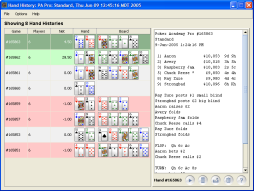

The Hand History window displays a scrolling list of recent hands. Your cards are shown in the Hand column, and the board cards are shown in the Board column.
Clicking on any of the hands will generate a transcript on the right.
Table rows are color coded in red, green or white (by default). A red background indicates that the hero lost money during the hand, white indicates no money won or lost, and green indicates a win.
If the hand history browser was launched on an opponent's statistics,
the Hole cards and cell shading will be displayed from the perspective
of that player, instead of the hero. The window's titlebar will specify the
perspective.